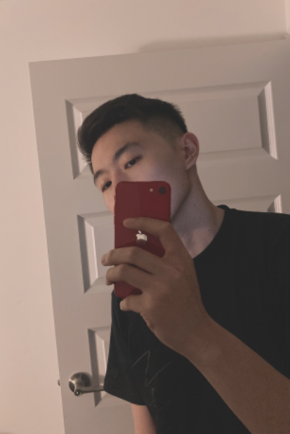
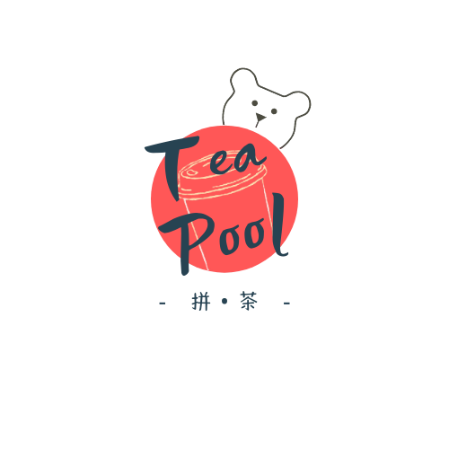

I'm a fresh grad from the University of Waterloo.
I made myself a name "Gerald", but if you happen to speak Mandarin, or are down for a challenge, you might also want to call me "Xuān míng", which is my real name.

I was born and raised in China before pursuing a degree and a career in Canada, which exposed me to both Chinese and Canadian culture, as well as enabled me to meet people from everywhere.
Though I've spent years learning and writing math proofs, my passion turns out to end up in coding. Besides that, I enjoy Karaoke, piano, workout, and making cocktails in my leisure time.
I made myself a name "Gerald", but if you happen to speak Mandarin, or are down for a challenge, you might also want to call me "Xuān míng", which is my real name.
I was born and raised in China before pursuing a degree and a career in Canada, which exposed me to both Chinese and Canadian culture, as well as enabled me to meet people from everywhere.
Though I've spent years learning and writing math proofs, my passion turns out to end up in coding. Besides that, I enjoy Karaoke, piano, workout, and making cocktails in my leisure time.
Bechelor of Mathematics earned from the University of Waterloo,
double major + one minor.
double major + one minor.
Computational Mathematics
Combinatorics & Optimization
Computing Minor
The business attempt was launched by me and some peer students, which was inspired by carpooling. We made bi-direction inter-city (Waterloo - GTA) delivery, focusing on dessert and bubble tea, by cooperating with those who offer frequent carpool services.
We developed a Wechat embedded app and a small website to record orders, and managed all delivery details. Though it ceased due to the graduation of team members, our competitor who adopts the same mode is already a registered small business now.(2020)

Golden Sun tech Ltd. The firm was responsible for the surveillance system for the Gaokao (Chinese college entrance exam) and Zhongkao (Chinese high school entrance exam).
My internship duty involves the development of a control page for proctors. There I learned Java, how to interact with Apache Tomcat, and some frontend knowledge later on.(2019)
Keep gaining Exp to level up...
Comming Soon!